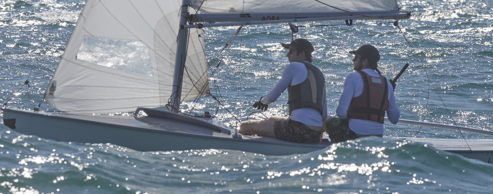

I was born in Valencia, Spain, in 1990. Since I was a little kid, I have been passionate about science, technology, and swimming!
I was an elite swimmer for five years, hitting the top ten in the Spanish nationals several times and becoming a silver medalist in the 2012 Spanish Swimming Nationals.
I received an athletic scholarship to continue my mathematical studies and swimming career in the USA (Detroit city!).
Where I successfully manage to combine sports and studies till 2015.
Check it out:
WSU-athletics
That same year I got accepted to pursue a master's degree in mathematics at the University of Miami,
so I got a tiny Chevy car and drove from Detroit to Miami, where I made a local friend called Geico (a wild iguana that visited me every morning).
In 2017 I went to Switzerland, and four years later, I graduated with a Doctorate in Mathematics from the University of Bern,
specializing in low-dimensional topology and exploring the intricate properties of some of the most exciting mathematical knots and links.
Shortly after that, and given my increasing interest in Machine Learning, I continued my career in the AI field, studying data science at Zurich Constructor Learning Academy.
Currently, I am working as a Data Scientist at the Swiss Federal Laboratories for Materials Science and Technology (Empa), as well as a Data Science teacher at Le Wagon academy, in Zurich.
I am a member of the Astronomical Valencian Association AVA and enjoy swimming and sailing.

Photo taken by baixaulifoto.com, Valencia, Spain.